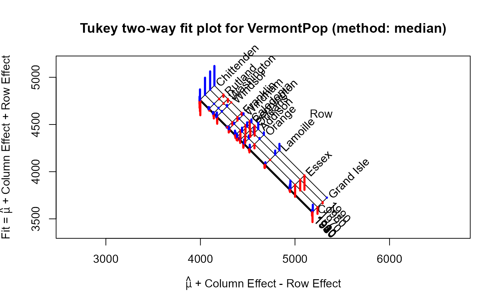

Vermont country populations from the US Census, 1900-1990
References
Morgenthaler, Stephan, and John W. Tukey. “Multipolishing and Two-Way Plots.” Metrika 53.3 (2001): 245–267.
Examples
options(digits=4)
VP <- twoway(VermontPop,
method="median",
responseName = "log Population")
VP
#>
#> Median polish decomposition (Dataset: "VermontPop"; Response: log Population)
#> Residuals bordered by row effects, column effects, and overall
#>
#> 1900 1910 1920 1930 1940 1950 1960 1970 1980 1990 roweff
#> + ---- ---- ---- ---- ---- ---- ---- ---- ---- ---- + ----
#> Chittenden | -167 -137 -120 -81 -39 40 111 182 195 206 : 383
#> Rutland | -23 13 0 24 -1 1 3 2 -7 -25 : 287
#> Washington | -58 -2 -28 6 6 18 13 6 -7 -31 : 240
#> Windsor | -78 -59 -14 -6 1 34 45 8 18 -2 : 204
#> Franklin | 4 -1 5 9 4 8 -3 -30 -38 -23 : 94
#> Windham | -30 -26 -32 -34 -3 11 21 13 7 14 : 75
#> Caledonia | -3 25 24 52 5 -1 -29 -82 -82 -94 : 9
#> Bennington | -36 -43 -35 -30 -16 17 29 44 46 32 : -9
#> Orleans | 3 28 43 30 6 -5 -32 -85 -73 -108 : -42
#> Addison | 40 0 -26 -40 -38 -4 5 34 63 68 : -80
#> Orange | 44 30 0 -11 -1 -2 -34 -44 12 26 : -140
#> Lamoille | 13 23 1 -30 -26 -12 -31 -2 44 69 : -305
#> Essex | 94 56 59 44 9 -8 -25 -128 -116 -154 : -570
#> Grand Isle | 75 0 7 29 14 -35 -105 -72 -15 2 : -807
#> + .... .... .... .... .... .... .... .... .... .... + ....
#> coleff | 3 3 -1 -4 -6 -5 0 53 107 152 : 4379
#>
plot(VP)
